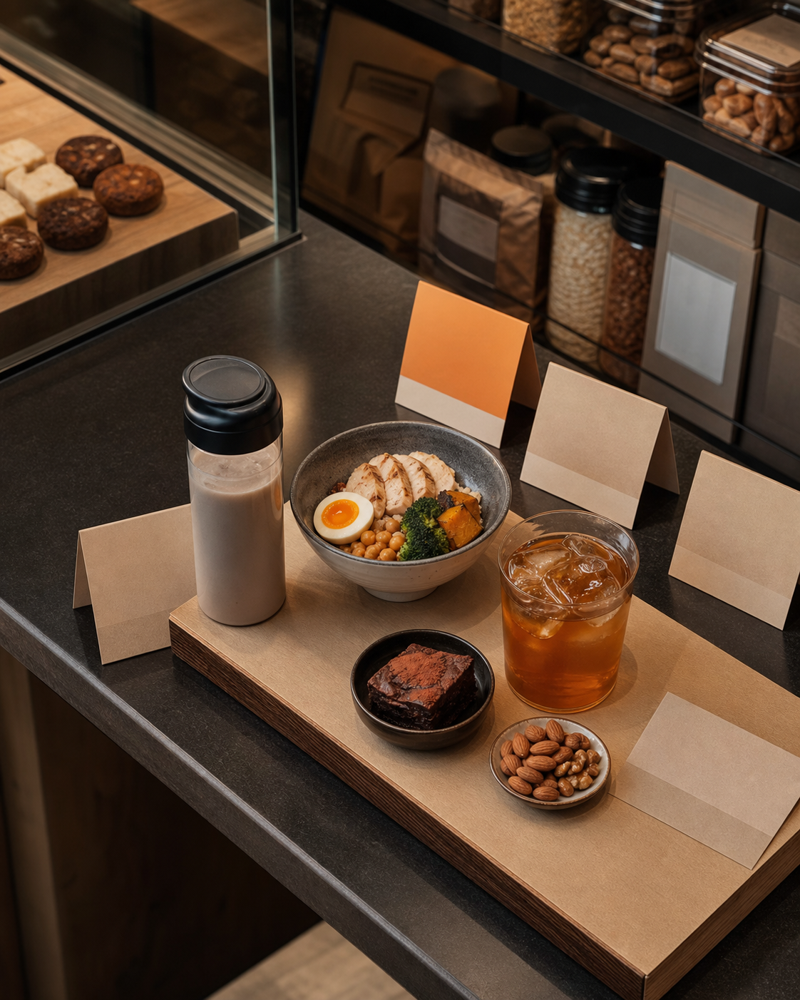

01GLP1 MARKET 2026
GLP1 MARKET 2026위고비 열풍,
위고비 열풍,
진짜 변화는
약국 밖에서 시작된다
고객의 장바구니, 식사량, 자기관리 루틴이 다시 짜이는 신호입니다.
식품외식헬스뷰티패션광고
02MARKET SHIFT
MARKET SHIFT살 빠지는 약으로만 보면
살 빠지는 약으로만 보면
진짜 시장을 놓친다
GLP1/GIP 계열은 관심 이슈에서 거대한 건강관리 카테고리로 넓어지고 있습니다.
틈새 관심 -> 메가 카테고리주사 중심 -> 알약 흐름체중관리 -> 동반질환 관리
03KOREA
KOREA한국에서도 관심은 커졌지만,
한국에서도 관심은 커졌지만,
가드레일이 먼저다
위고비와 마운자로가 알려졌지만, 비급여와 처방, 대상자 확인이 핵심입니다.
비급여대상자 확인의료진 판단생활습관 병행
04GUARDRAIL
GUARDRAIL건강 이슈는
건강 이슈는
말하는 방식이 리스크가 된다
전문의약품 이름을 마케팅 언어처럼 쓰는 순간, 신뢰와 안전 문제가 생깁니다.
누구나 가능 금지부작용 없음 금지쉽게 처방 금지빠른 감량 보장 금지

05CONSUMPTION
CONSUMPTION많이 먹기보다
많이 먹기보다
적게 먹어도 만족을 찾는다
해외에서는 소용량, 고단백, 저당, 작은 포션 같은 소비 신호가 관찰됩니다.
소용량고단백·저당가벼운 한 끼국내 적용 확인 필요
06CHECKLIST
CHECKLIST약을 말하지 말고,
약을 말하지 말고,
바뀐 루틴을 읽어라
고객의 식사량, 만족 기준, 자기관리 고민이 바뀌는지 봐야 합니다.
소용량 옵션효과 보장 금지처방·구매 안내 금지